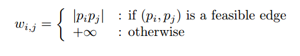

Introduction
There is given a set of points on the plane. The points distinguish by their red and blue colors that are equal in amount. The problem is to connect those points by straight line segments such that each segment has red and blue endpoints and there are no any two segments which cross each other. Furthermore, from all longest segments of all matchings the smallest one is chosen. The bottleneck bichromatic matching (BBM) problem is NP-hard. However in [1] authors provided special solutions for special cases. They considered several cases: points in convex position (i.e. points are placed on their convex hull [2]), points on circle and blue points on straight line. The case where points are in convex position is the most interesting one. Thus this project is focused on the case where points are in convex position. In this case by using a powerful observation [3] authors have given a dynamic programing solution. This page contains modest clarification related to optimal substructure of the problem mentioned in [1].
Employ your time in improving yourself by other men's writings so that you shall come easily by what others have labored hard for.
In [1] the following notations are provided.
Let R = {r1, r2, …, rn} be the set of n red points, and B = {b1, b2, …, bn} be the set of n blue points in the plane. A RB-matching is a non-crossing perfect matching of the points by straight line segments in such a way that each segment has one endpoint in B and one in R. The bottleneck is the length of the longest edge in RB-matching and the BBM problem is to find the minimum bottleneck from all possible RB-matchings.
The BBM has many applications such as in pattern recognition, image processing, statistical analysis and in other fields.
Points in Convex Position
In [1] a O(n3)-time algorithm for points on convex position is presented. By P is denoted the union of R and B sets, P = {r1, r2, …, rn,b1, b2, …, bn}. There is also an observation (Observation 1 in [1]) provided which says the following: If (ri, bi) is an edge in any RB-matching of P, then there are equal amount of red and blue points placed between ri and bi. And then the authors come up with the definition of feasible edge: (pi, pj) belonging to P is called feasible edge if pi and pj have different colors and the sequence pi + 1,...,pj - 1 contains the same number of red and blue points. Observing this, Fi is denoted the set of feasible matches of pi
Below is provided a canvas for drawing red and blue points in counter clockwise order in convex position. Note that the amount of red and blue points should be equal. To complete the drawing of the convex hull you should click on the first vertex. After that there will be shown a table which will show all feasible matchings of each vertex.
Note that the page is interactive and for continuous proper working you need to draw the convex hull
Each cell of the table above shows the weights of the edges in the case if they are feasible edges, otherwise it shows infinite. It is based on the following formula that was mentioned in [1]
From the table it can be seen that the vertex p0 has the following set of feasible matches: . For vertex p1,
Now it's time to look through the actual algorithm. Authors of [1] have provided the following notations for dynamic programming solution:
Pi,j = {pi,...,pj} is any subsequence of P, where 1 ≤ i < j ≤ 2n. A[i,j] denotes the bottleneck of the optimal matching in Pi,j if Pi,j has an RB-matching, otherwise, A[i, j] = +∞. A[i, j] is the optimal substructure and the A[1, 2n] will be the optimal solution for P by using dynamic programming. Thus the algorithm gives a table which fills in bottom up fashion. The reccurence relation is the following:
where A[i+1,k-1] and A[k+1,j] are the left and right sub-problems of the edge (pi, pk). To compute A[i,j] it minimizes all the k sub-problems where for each k it takes the maximum from two sub-problems and the weight of the fiseable (pi, pk) edge. In general there are n2 sub-problems and k = j - i lookups in each sub-problem. Thus the total running time will be O(n3).There is an important point to notice while filling up the table, which is done by using the formula mentioned above.The important point here is that while filling the table there can be cases where i > j, for example if we take k = i + 1, then we will get A[i + 1][i] (Note that the same story can happen with A[k + 1, j]). We can neglect that cases by taking k-s strictly greater than i + 1, however in that case we we will lose the second part which is A[k + 1,j]. So that kind of A-s are like undefined because we are not interested in such A-s where i > j. So without loss of generality we assign A[i,j] = 0, when i > j, because taking maximum value from three numbers is the same as to take the two not undefined or to take three numbers, but before that to assign undefined A to zero. On the other hand if i = j, then A[i, j] = +∞, because it means that there is only one point, but it can not have RB-matching to itself because in the self-edge colors of vertices will be the same, which is not feasible, that is why A[i, j] should be infinite. Below is the table illustrating A[i,j]
Note that the table below is created by you while drawing points in convex positions
From this last table it is seen that the A[1, 2n] is the A[0, ], which shows whether points have RB-matching or not. If there is RB-matching, then the A[0, ] shows the maximum weight of an edge in RB-matching (i.e. the bottleneck). Thus by using the previous table (first table) we can check which edge has the same value as A[0, ] has and take that edge. To take edges for the rest of vertices we should take such edges where weights are less than or equal to A[0, ].
Points on Circle
In [1] a solution is given for BBM problem where points are on circle. There is mentioned a lemma which says the following:
There is an optimal RB-matching for a point set P on a circle, such that each pi∈ P is connected to its first feasible match in the clockwise or counter clockwise order from pi
Assume that in the first table for feasible edges the points are placed on circle, then the first feasible match is the first cell from the top or from the bottom. Thus for each i, j we have two lookups instead of k. Authors in [1] use the above mentioned algorithm to compute BBM problem where the points are arranged on the boundary of the circle and get the O(n2) running time.
However, they have also provided a better algorithm whose running time is O(n log n).Before the actual algorithm the feasible mathces for each edge are computed. To compute feasible matches for each vertex they have developed the following algorthm: It is assumed that the red and blue points are placed on circle in clockwise order. Fi denotes the first feasible matches. Note that Fi has at most two elements. The P' is a copy of P. The algorithms first strats from any red vertex and travels to all vertices in clockwise direction. If it finds a red point the algorithm pushes it onto the stack, otherwise if it is blue point and if stack is not empty it popes the stack and removes the popped point and the blue point from the P' otherwise if stack is empty it does nothing. After first travel (when it has already visited all vertices) if the stack is not empty it starts the same procedure in counter clockwise direction. Thus the algorithm visits each vertex at most twice, therefore the runing time is linear O(n). This procedure is very similar to the case in regular expression where the automata should read equal amount of two types of symbols (e.g. the number of a-s should be equal to the number of b-s. For more information see [4]).
Conclusion
Here we have discussed the idea of feasible edges which helped to find RB-matching of points in convex position or on baundary of circle. We covered the optimal substructure in the case of convex position, by considering all cases and giving exact explinations. The algorithm for points in convex position can also be used for finding RB-matching for points on boundary of circle. There was mentioned a faster algorithm for points on circle (O(n log n)), where the first step for finding feasible edges was made.
References
[1] Ahmad Biniaz, Anil Maheshwari, Michiel Smid. Bottleneck Bichromatic Plane Matching of Points. 2014. [2] T. H. Cormen, C. E. Leiserson, R. L. Rivest, C. Stein. Introduction to Algorithms. Convexx Hull page 947. Dynamic Programming page 339. 2nd edition 2001. [3] Ahmad Biniaz, Anil Maheshwari, Michiel Smid. Bottleneck Bichromatic Plane Matching of Points. Page 1, 2014. [4] Raymond Zavodnik. Introduction to Computer Science. Pages 52-66, 97-101. 2014.